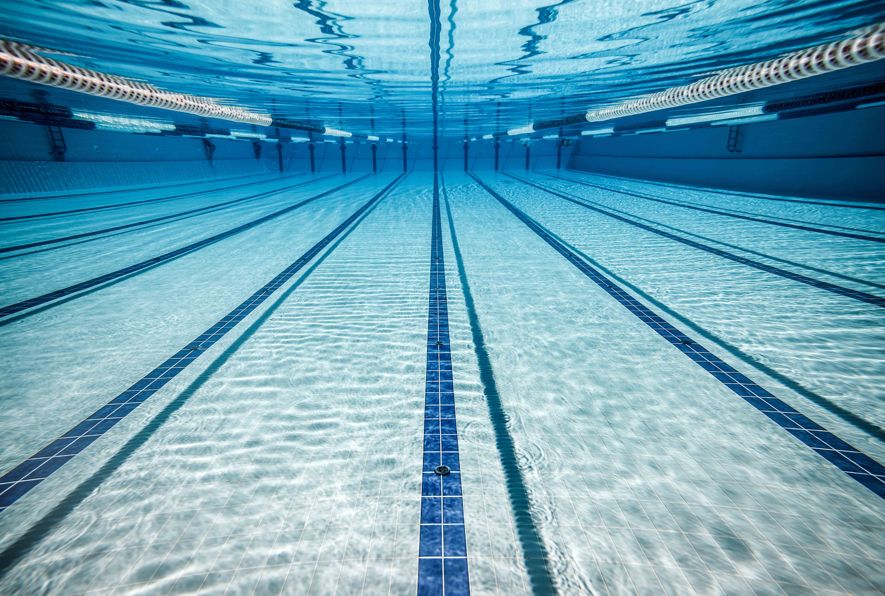
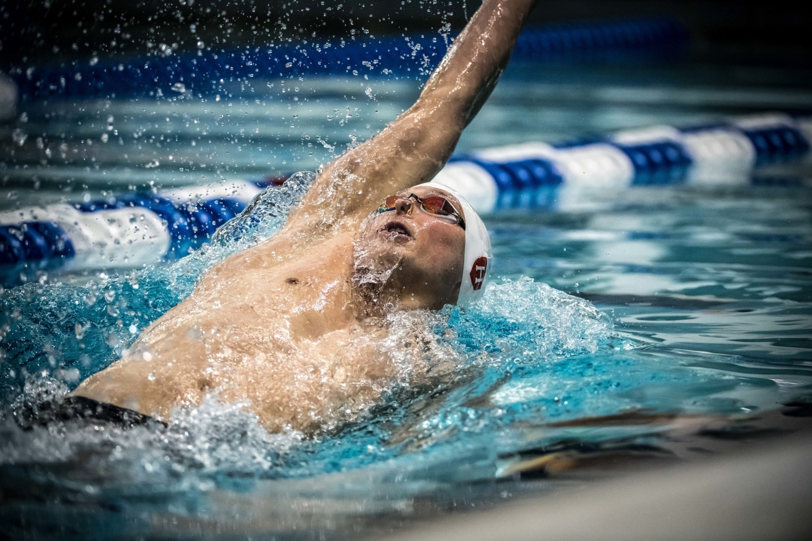

Il dorso è uno stile di nuoto in cui il nuotatore si trova in posizione supina, con il corpo orizzontale sulla superficie dell'acqua. In questo stile, le braccia si muovono alternativamente sopra la superficie dell'acqua, mentre le gambe eseguono un movimento alternato sotto la superficie dell'acqua. Il dorso è uno stile che richiede una buona coordinazione tra braccia e gambe, nonché una notevole forza muscolare nella parte superiore del corpo. Questo stile è spesso considerato più rilassante rispetto ad altri stili di nuoto, poiché il viso rimane fuori dall'acqua, permettendo al nuotatore di respirare più facilmente.

Il dorso è uno stile di nuoto comunemente utilizzato nelle competizioni e richiede una tecnica precisa per massimizzare l'efficienza del movimento nell'acqua. I nuotatori che praticano il dorso devono sviluppare una buona flessibilità, forza muscolare e resistenza cardiovascolare per eseguire correttamente questo stile. Inoltre, il dorso coinvolge molti gruppi muscolari, inclusi i muscoli delle spalle, delle braccia, del core e delle gambe, rendendolo un allenamento completo per tutto il corpo.
Le gare che comprendono questo stile sono: